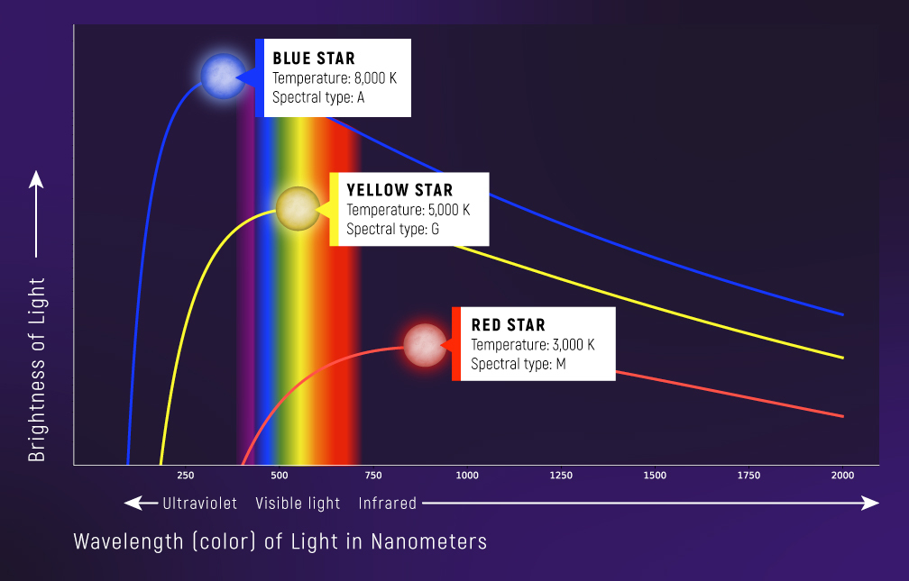

Формула Планка. Світлові кванти#
Наприкінці XIX століття серед науковців панувала непохитна впевненість у хвильовій природі світла. Однак сучасна фізика розглядає світло як унікальне явище з подвійною природою - воно проявляє властивості і хвилі, і частинки.
Зародження квантової теорії#
Становлення квантової фізики безпосередньо пов'язане з дослідженням випромінювальних характеристик абсолютно чорного тіла.
Абсолютно чорне тіло представляє собою теоретичну фізичну модель об'єкта, який цілковито поглинає все випромінювання, що потрапляє на його поверхню.
Всупереч своїй назві, таке тіло здатне випромінювати світло. Подібні характеристики випромінювання демонструють багаття, розжарені нитки лампи розжарювання та більшість зірок. Особливість випромінювання абсолютно чорного тіла полягає в тому, що його спектральні характеристики визначаються виключно температурою. Експериментальні вимірювання виявили характерну залежність розподілу енергії випромінювання від довжини хвилі, що графічно відображається серією кривих (рис. 1). При підвищенні температури тіла спостерігається зміщення максимуму енергії випромінювання в бік коротких хвиль спектру. Тривалий час фізики безуспішно намагались вивести універсальне математичне рівняння для опису цієї залежності.

Рис. 1. Криві випромінювання абсолютного чорного тіла залежно від температури цього тіла. Credit: NASA, ESA, CSA, Leah Hustak (STScI), Andi James (STScI). Link
Лише восени 1900 року німецький вчений Макс Планк, проаналізувавши всі доступні експериментальні дані, запропонував формулу, яка ідеально узгоджувалась з експериментальними результатами. Примітно, що Планк інтуїтивно запропонував цю формулу, оскільки не зміг її теоретично обґрунтувати у рамках класичної електродинаміки Максвелла. Для пояснення своєї формули йому довелося запровадити революційну гіпотезу, що суперечила усталеним уявленням про природу світла.
Гіпотеза Планка: випромінювання електромагнітних хвиль атомами та молекулами відбувається не неперервно, а квантовано - окремими дискретними порціями, енергія \(E\) яких прямо пропорційна частоті \(v\) випромінювання:
\[E = h \nu\]
де \(h\) – фундаментальна фізична константа.
З часом ці "порції енергії" отримали назву кванти енергії, а константу \(h\) почали називати сталою Планка. Відповідно до сучасних вимірювань, значення сталої Планка становить:
\[h = 6.626 \cdot 10^{-34} \text{ Дж} \cdot \text{с} \approx 6.63 \cdot 10^{-34} \text{ Дж} \cdot \text{с}\]
Також часто застосовують зведену сталу Планка:
\[\hbar = \frac{h}{2\pi}\]
У цьому випадку ми можемо записати формулу для енергії трохи інакше
де \(\omega = 2\pi \nu\) - кутова частота. Частота \(\nu\) вимірюється в герцах (Гц = cекунда в мінус першій степені), а кутова частота \(\omega\) вимірюється в радіанах на секунду (рад/с). Таким чином:
\[E = h \nu = \hbar \omega\]
Властивості фотонів#
Початково Макс Планк намагався поєднати свою гіпотезу з класичними уявленнями, припускаючи, що лише випромінювання відбувається дискретними порціями, тоді як поширення та поглинання світла залишаються неперервними процесами. Ситуація кардинально змінилася після того, як Альберт Ейнштейн (1879-1955) запропонував новий погляд на теплове випромінювання.
Застосовуючи аналогії з кінетичною теорією газів, Ейнштейн продемонстрував, що монохроматичне випромінювання низької інтенсивності поводиться так, ніби складається з \(N\) незалежних "квантів енергії", кожен з яких несе енергію \(h \nu\). В результаті Ейнштейн прийшов до революційного висновку про те, що йдеться не просто про порції енергії, а про реальні фізичні частинки, які формують будь-яке електромагнітне випромінювання. Згодом ці частинки світла (кванти світла) отримали назву фотони.
Згідно із сучасними уявленнями, фотони характеризуються наступними властивостями:
Фотон електрично нейтральний: \(q = 0\) - електричний заряд фотона дорівнює нулю.
Фотон не має маси спокою: \(m = 0\) - фотон належить до безмасових частинок.
Швидкість фотона не залежить від вибору системи відліку і завжди дорівнює фундаментальній константі \(c\) \((c = 3 \cdot 10^8 \text{ м/с})\), пов'язаній з частотою та довжиною відповідної електромагнітної хвилі співвідношенням: \(c = \lambda \nu\).
Зверніть увагу! Важливо розрізняти швидкість поширення світлової хвилі в середовищі та швидкість руху фотонів. У речовині фотони переміщуються від одного атома до іншого, при цьому вони поглинаються атомами з подальшим випромінюванням.
Енергія фотона визначається частотою електромагнітної хвилі, квантом якої він є: \(E = hv\nu\). При поглинанні фотона речовиною вся його енергія передається частинкам середовища.
Імпульс фотона визначається співвідношенням його енергії до швидкості світла та обернено пропорційний довжині хвилі:
Емісія (випромінювання) фотонів відбувається при переході атомів чи молекул із збудженого стану в стан з нижчою енергією, при прискоренні заряджених частинок, під час розпаду певних елементарних частинок та в процесі анігіляції.
Описані властивості фотонів встановлювались поступово. На початку XX століття сама ідея існування дискретних частинок світла зустрічала потужний спротив наукової спільноти, адже явища інтерференції та дифракції переконливо демонстрували хвильову природу світла. Навіть через півстоліття після висунення гіпотези Планка, коли реальність існування фотонів уже не викликала сумнівів, Альберт Ейнштейн визнавав, що незважаючи на п'ятдесят років роздумів, він і досі не зміг наблизитись до розуміння справжньої сутності світлових квантів.